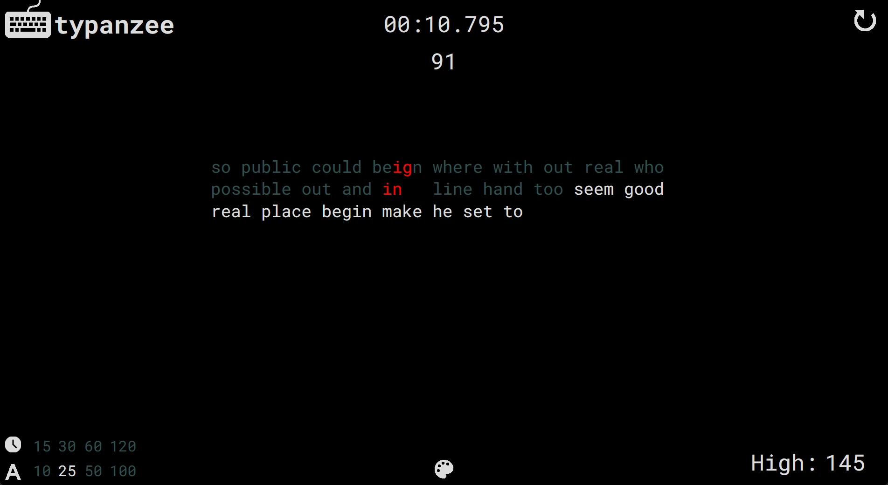

griddo.dev
Color Picker
A simple, streamlined android app designed to improve UI/UX workflow by giving easy access to a color picker, hex/rgb codes, and contrast examples.
Written in Kotlin with Android Studio, and compatible with all modern android devices.

Typanzee
A native, desktop typing test application modeled after the website
monkeytype
designed to run offline efficiently.
Written in C#/.NET with WPF. Runs on all Windows 7 or newer systems.